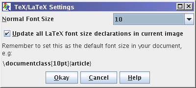
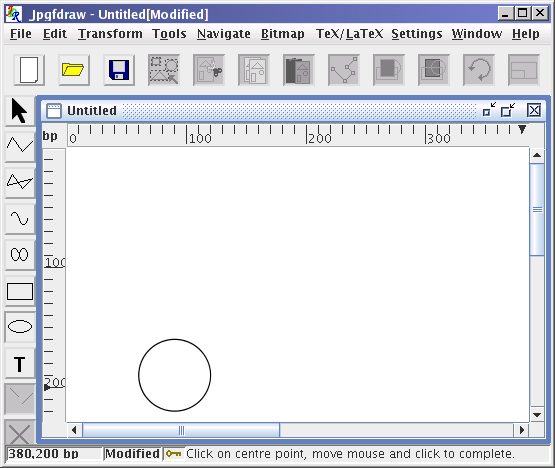
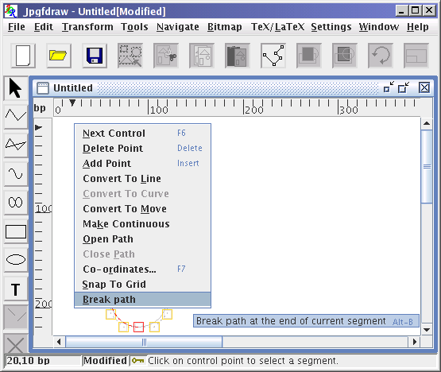
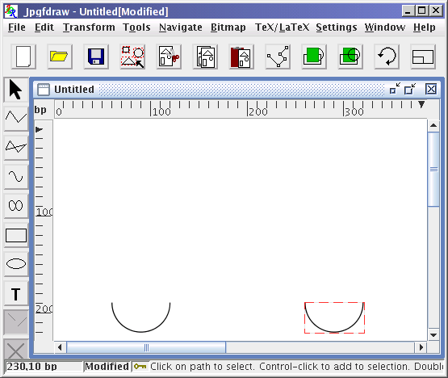
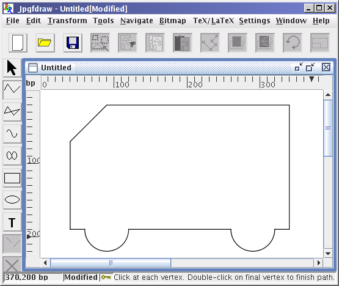
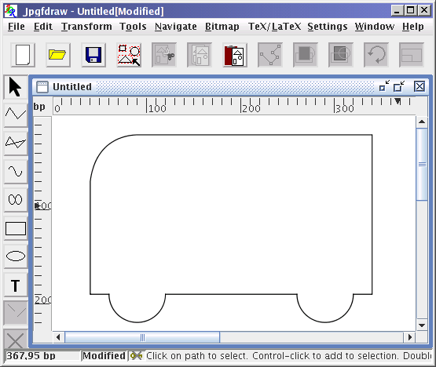
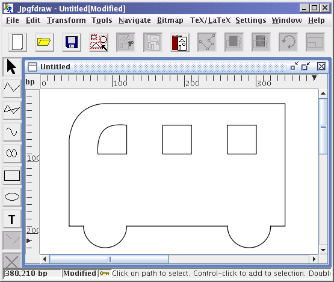
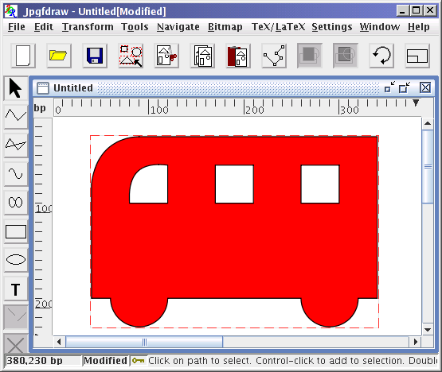

Previous: An Artificial Neuron Up: Step-by-Step Examples Next: A Poster
Bus
This example illustrates how to:
- If you have not already done so, enable the grid lock via
Settings->Grid->Lock Grid.
- Use TeX/LaTeX->Settings->Set Normal Size... to display the
TeX/LaTeX Settings dialog box and set the
normal font size to the value that you will be using in your
document (see Figure 11.29). In my document, I have
used 10pt.
|  |
Figure 11.29: Bus Example--Setting the Normal Font Size
To create the bus outline, start with the
ellipse tool, and create a circle
(Figure 11.30).
|  |
Figure 11.30: Bus Example--Create a Circle
- Select the circle, and select the edit path
tool. The control point at the start of the
path is always the first selected control point when you
select the edit tool (Figure 11.31(a)). Select the second
segment in the path (Figure 11.31(b)).
|
Figure 11.31: Bus Example--Editing the Path
- Break the path using the
edit path popup menu and selecting Break path (Figure 11.32(a)). You should now have two
separate semi-circles (Figure 11.32(b)). If you find
that the circle has been split unevenly (i.e. you have a quadrant
and a three-quarters of a circle) then you selected the wrong
segment. Don't panic, just select Edit->Undo and try
again.
|  |
| (a) |
 |
| (b) |
|
Figure 11.32: Bus Example--Break the Path
- Exit edit path mode. Move and rotate the top semi-circle
so that it looks like Figure 11.33.
|  |
Figure 11.33: Bus Example--Move and Rotate Top Semi-Circle
Select the open line tool and
add in the two lines as shown in Figure 11.34.
|  |
Figure 11.34: Bus Example--Adding Lines
- Select all paths and use Transform->Path Union.
You should now have just a single path.
- Select this new path, and use the
edit path tool to give the
front end of the bus a slightly curved outline, as
shown in Figure 11.35. (You may find it easier to temporarily
disable the grid lock while you edit the path.)
|  |
Figure 11.35: Bus Example--Convert Line Segment to a Curve
Add the windows, as shown in Figure 11.36.
|  |
Figure 11.36: Bus Example--Add Windows
- This next operation assumes that you haven't changed the
stacking order. The main outline of the bus must be at the
rear. To ensure this, select the bus outline and use the
move to back function.
- Select all paths, and apply Transform->Subtract Paths.
Set the fill colour to red using the
Edit->Path->Fill Colour... dialog box. The windows
should appear as holes. See Figure 11.37.
|  |
Figure 11.37: Bus Example--Subtract Windows from Bus Outline and Set
Fill Colour
- Make sure that the bus is selected. Select the
TeX/LaTeX->Shapepar... menu item. A dialog box will appear:
select the Use Path option and click
Okay. Scan lines will appear as Jpgfdraw works out the parameters. Once completed a file dialog box will
appear. Give the file a name, e.g. busshape.tex.
- If you are using LaTeX, create a document that looks something
like:
\documentclass{article}
\usepackage{shapepar}
\begin{document}
\input{busshape}\frenchspacing
The wheels on the bus go round and round...
\end{document}
- If you are using plain TeX, create a document that looks
something like:
\input shapepar.sty
\input busshape.tex
\frenchspacing
The wheels on the bus go round and round...
\bye
- The resulting shaped paragraph is shown in Figure 11.38.
 |
Figure 11.38: Bus Example--Resulting Shaped Paragraph
Previous: An Artificial Neuron Up: Step-by-Step Examples Next: A Poster
© 2012 Dickimaw Books.
"Dickimaw", "Dickimaw Books" and the Dickimaw parrot logo are
trademarks. The logo was derived from a painting by Magdalene
Pritchett.